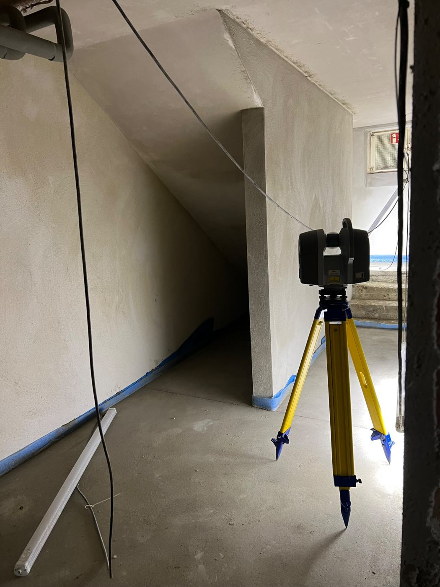
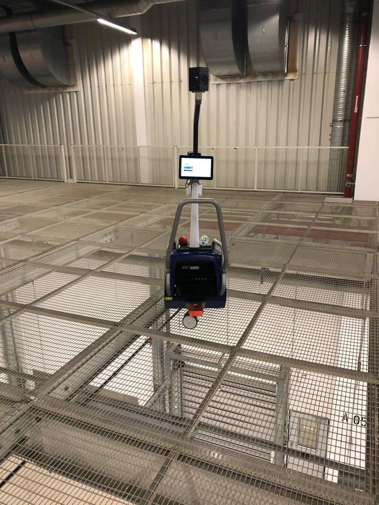
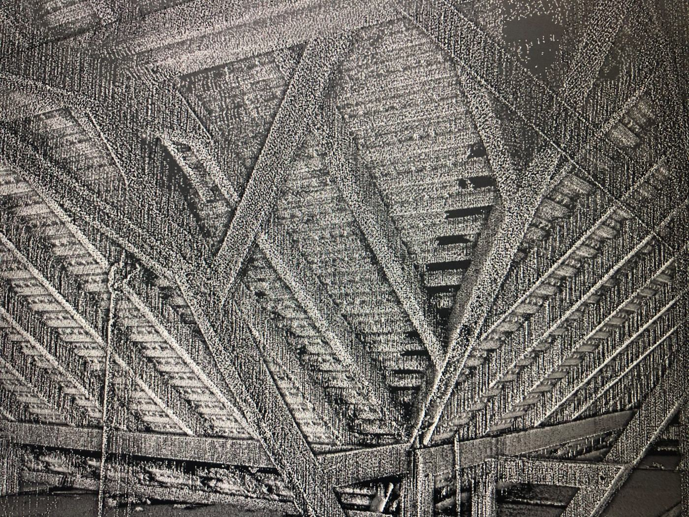
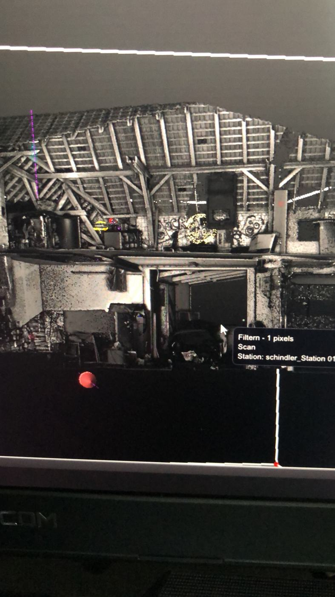

Scan
Punktwolke
Für Büros, die selbst modellieren und zeichnen.
- 3D-Laserscan innen und außen
- Registrierte, geprüfte Punktwolke
- Georeferenziert
- E57, RCP, RCS oder LAS
3D-Laserscanning, CAD und BIM aus Ingolstadt
Als Vermessungsbüro erfassen wir Gebäude, Innenräume, Fassaden und Außenbereiche mit 3D-Laserscanning und Drohnenvermessung. Die Daten bereiten wir für Ihre weitere Planung auf.
Leistungen
Sie bekommen genau das Ergebnis, das Ihr Projekt braucht. Von der Punktwolke bis zum fertigen Gebäudemodell.

Innenräume, Fassaden und Bestandsgebäude werden vollständig und detailgetreu erfasst. Das spart Nachmessungen.

Alle Scans werden registriert, geprüft und zu einer einheitlichen, georeferenzierten Punktwolke zusammengeführt.

Grundrisse, Schnitte und Ansichten auf Grundlage der echten Bestandsdaten, als 2D-Bestandspläne.

Digitale Gebäudemodelle für Planung, Koordination und Betrieb. Für Neubau, Umbau und Bestandsdokumentation.

Gebäudeaufmaß für Entwurfs- und Ausführungsplanung. Ein persönlicher Ansprechpartner stimmt den Umfang mit Ihnen ab.

Dächer, Fassaden und Außenbereiche aus der Luft erfasst. Ergänzt den Scan am Boden, wo es das Projekt erfordert.

Ergebnisse
Wir liefern genau die Daten, die Ihr Projekt braucht. Und zwar so aufbereitet, dass Sie in Architektur, Planung und Abstimmung direkt damit arbeiten können.
Drei Wege zum Ergebnis
Jedes Projekt beginnt mit dem Scan vor Ort. Wie weit wir die Daten für Sie aufbereiten, entscheiden Sie.
Scan
Für Büros, die selbst modellieren und zeichnen.
Scan und Plan
Für Architektur, Umbau und Sanierung.
Scan und Modell
Für Planung, Koordination und Betrieb.
Den Preis nennen wir Ihnen nach einer kurzen Abstimmung zu Objekt, Fläche und Detailgrad.
Ablauf
Kleinere Gebäude sind oft an einem Tag erfasst. Größere Industrieanlagen brauchen entsprechend mehr Zeit.
Wir klären Ihr Vorhaben und legen den Umfang der Vermessung fest.
Erfassung mit dem Laserscanner, bei Bedarf zusätzlich mit der Drohne.
Die Scans werden registriert und zu einer Punktwolke zusammengeführt.
Wir prüfen die Daten auf Vollständigkeit und Genauigkeit.
Sie erhalten Punktwolke, CAD-Plan oder BIM-Modell im gewünschten Format.
Einsatzfälle
Ob Wohngebäude, Gewerbeobjekt oder komplexer Gebäudebestand: Wir unterstützen Architekten, Ingenieure, Bauunternehmen und öffentliche Auftraggeber.
Datenformate
| Punktwolke | E57RCPRCSLAS |
|---|---|
| CAD | DWGDXF |
| BIM | IFCRevit (RVT)Archicad |
| Dokumentation | PDF |
Einblicke
So sehen die Ergebnisse aus: Punktwolken und Modelle aus echten Projekten.





Referenzen
Produktion, Verkauf und Dienstbetrieb müssen für unsere Arbeit nicht unterbrochen werden.
Georeferenzierte Erfassung des gesamten Produktionsstandorts während des laufenden Produktionsbetriebs.
Produktionshallen und Hauptgebäude. Punktwolken für Planung und Dokumentation.
Bestandserfassung von Filialen. Punktwolken per Cloud an jedem Standort verfügbar.
Möbelhäuser im regulären Geschäftsbetrieb erfasst, ohne den Verkauf zu stören.
Gebäude, Hallen und Kasernenanlagen der Dienstleistungszentren bei laufendem Dienstbetrieb.
Über uns
Digitale Vermessung wurde gegründet, um Architekten, Ingenieuren und Immobilienbesitzern modernste Vermessungslösungen zu bieten. Unser Ziel: präzise Daten als solide Grundlage für erfolgreiche Planungen.
FAQ
Moderne Laserscanner erreichen im Regelfall Messgenauigkeiten im Millimeterbereich. Die Genauigkeit richtet sich nach Projektumfang und Ihren Anforderungen.
Kleinere Gebäude sind oft an einem Tag erfasst. Größere Industrieanlagen brauchen mehr Zeit. Bei Audi in Puebla waren es rund 500.000 m² in zehn Tagen.
Nein. Wir haben Produktionsstandorte, Möbelhäuser und Kasernen im laufenden Betrieb erfasst.
Punktwolken als E57, RCP, RCS oder LAS. CAD als DWG oder DXF. BIM als IFC, Revit oder Archicad. Dazu Pläne als PDF.
Unser Sitz ist in Ingolstadt. Wir arbeiten in ganz Deutschland.
Kontakt
Beschreiben Sie kurz Objekt, Ort und gewünschtes Ergebnis. Wir melden uns mit einer Einschätzung zu Umfang und Ablauf.